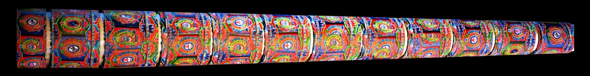

Designing projection content for a building façade
A visual design guide for turning architectural features into motion, rhythm and story.

A visual design guide for turning architectural features into motion, rhythm and story. This field note explains the decisions that keep an ambitious visual idea clear, practical and reliable at event scale.
Read the architecture first
Before creating effects, identify the building's hierarchy. Find its centre, repeated modules, dominant verticals and distinctive details. These features give the composition a natural rhythm. Content feels site-specific when movement appears to originate from the structure rather than sitting on top of it.
Build a clean mapping template
Create an accurate façade template and name architectural groups clearly. Separate towers, columns, arches, windows and background planes. A disciplined template lets several artists work consistently and makes revisions faster when survey information changes.
Design for the viewing distance
Large forms and clear timing survive distance better than small interface-like detail. Preview the composition at the approximate visual size experienced by the audience. If a key element disappears when the preview is reduced, it will probably struggle on site.

Use depth with intention
Shadows, perspective and occlusion can make a flat wall appear dimensional. Anchor these cues to real edges so the illusion remains convincing. Too many conflicting perspective tricks can weaken the architecture; one clear spatial idea usually reads more powerfully.
Give contrast a rhythm
An entire show at maximum brightness quickly becomes tiring. Alternate dense scenes with simple silhouettes, darkness and restrained colour. The quieter moments reset the eye and make the next transformation feel larger.
Finish for the playback system
Render with the final canvas, frame rate, colour workflow and codec agreed with the media-server team. Check seams and overlap regions. Deliver test files early, then keep a controlled version history so the approved master is unmistakable on show night.
Planning an immersive project?
Share the site, audience, date and creative ambition with AKS Creative Studio.
Start a conversation ↗